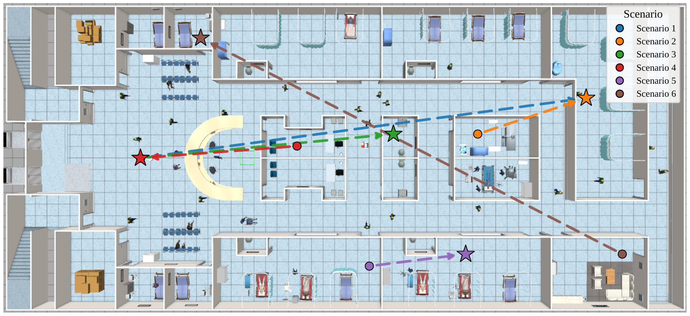
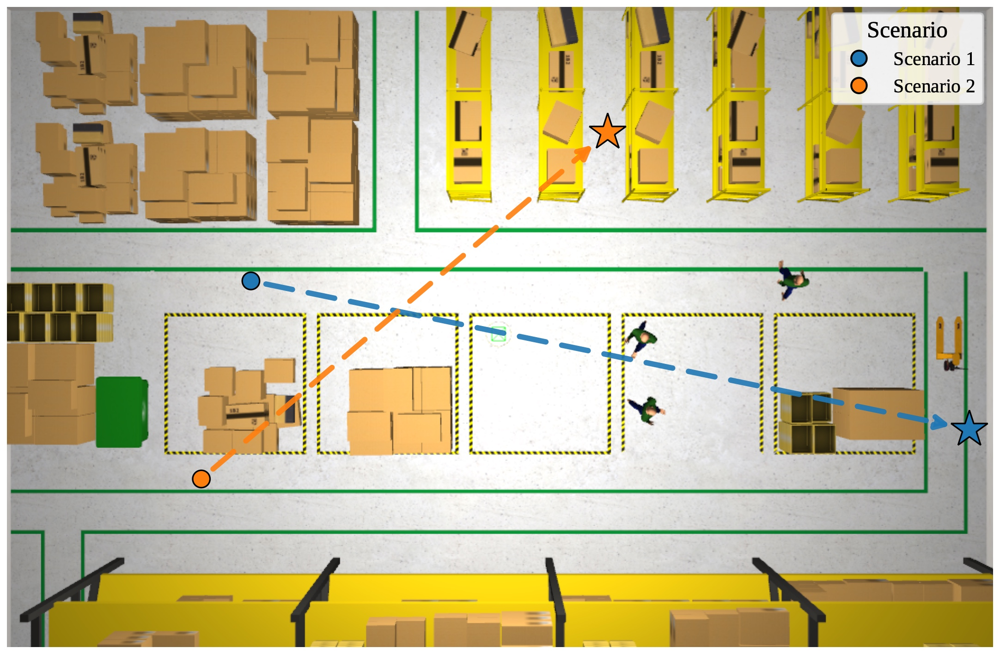
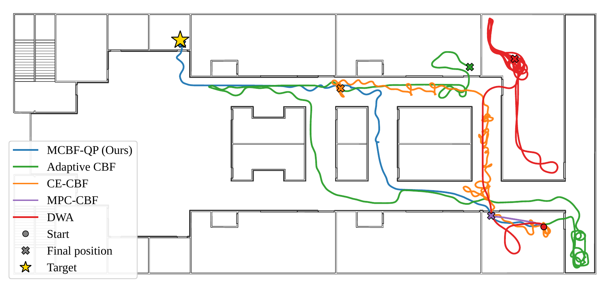
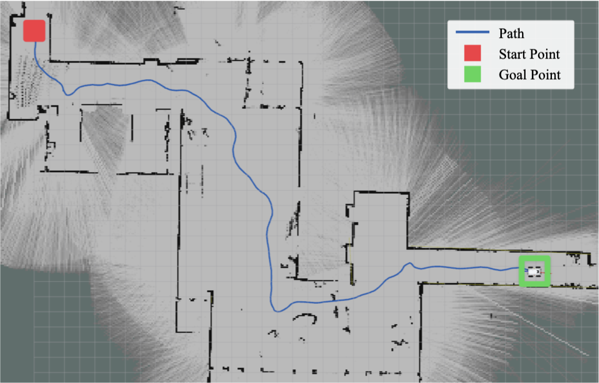
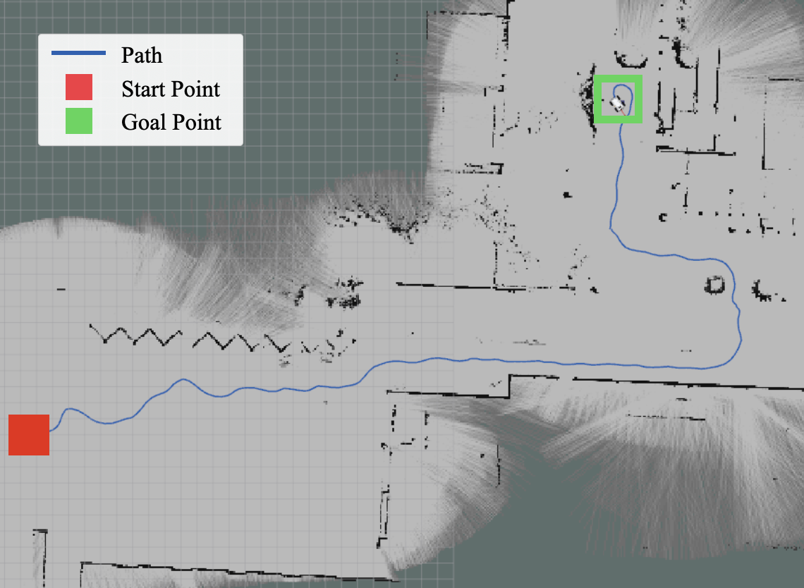

Abstract
Autonomous navigation in previously unseen environments requires effective perception, persistent environmental representation, and collision avoidance while maintaining progress toward a goal. Existing perception-based methods often rely on prior maps or short-horizon observations, limiting their ability to exploit previously observed structure. We propose a memory-aware multi-sensor navigation framework that integrates LiDAR and RGB perception, online distance-field representation learning, and a stage-adaptive Modulated Control Barrier Function Quadratic Program (MCBF-QP). The framework persistently represents static infrastructure while tracking dynamic obstacles, enabling the MCBF-QP controller to exploit previously observed geometry for obstacle circumvention and adapt its safety constraints and guidance to local conditions. Experiments in complex indoor and outdoor environments demonstrate improved navigation efficiency and goal-reaching performance while maintaining collision avoidance in narrow passages and around dynamic obstacles.
Contributions
- We propose a multi-sensor perception and navigation framework for autonomous navigation in complex, unknown, and unstructured indoor environments.
- We develop an online distance-field-based environmental representation that persistently captures static infrastructure while distinguishing dynamic obstacles, without requiring an offline map.
- We integrate the persistent representation with an MCBF-QP-based controller to exploit previously observed environmental structure for obstacle circumvention, and demonstrate improved mapless navigation efficiency and goal-reaching performance in dynamic environments.
Method Overview
As shown in Fig. 1, the proposed navigation framework integrates onboard state estimation, multi-sensory perception, online environment representation learning, and stage-adaptive MCBF control to enable collision avoidance and enhance navigation liveness in previously unmapped environments. Onboard state estimation establishes a persistent reference frame, while multi-sensory perception identifies dynamic obstacles and environment geometry from LiDAR and RGB observations. The resulting environmental observations are incorporated into an online-learned distance-field representation, which enables the MCBF controller to enforce collision-avoidance constraints and generate obstacle-circumventing guidance. The controller further adapts its CBF constraints and geodesic guidance to the local navigation condition—dynamic obstacles, narrow passages, and open space.
- Perception: 360° LiDAR point clouds + multi-view RGB human detection.
- Memory: Persistent occupancy of static infrastructure; dynamic agents tracked separately.
- Control: Stage-adaptive on-manifold MCBF-QP with individual barrier constraints per obstacle cluster.
Simulation Experiments
Two simulated environments are adapted from the AWS RoboMaker Warehouse World and Hospital World. The robot is a Freight differential-drive base equipped with a 360° 3D LiDAR and four RGB cameras (each 90° FOV) for full 360° visual coverage. Six navigation scenarios are defined in the hospital environment and two in the smaller warehouse environment, with 20 and 3 human actors as dynamic obstacles per trial, respectively. Each scenario specifies fixed start and goal poses; each human follows an independently designed waypoint sequence without reacting to the robot and is initialized at a random position along its trajectory. Each scenario is repeated five times for each baseline method.
Baselines:
- Adaptive CBF — ablation with the same perception/adaptation pipeline but standard CBF-QP.
- CE-CBF — GP local obstacles + circulation constraint (memory-unaware).
- MPC-CBF — LiDAR clustered into ellipses for MPC-CBF.
- DWA — Dynamic Window Approach on a ray-traced occupancy map.



Simulation clips are included in the demo video above.
Results Summary
Table I compares the memory-aware perception-based MCBF, its ablated CBF variant, and baselines in target-reaching success rate, collision rate per human encountered, and trajectory tortuosity. Adaptive MCBF is the only method to reach 100% success across all scenarios. Across the baselines, dynamic obstacles can further push the robot away from the target, resulting in long detours and high trajectory tortuosity even when the target is reached (Fig. 3). The proposed method combines persistent infrastructure mapping of explored regions with a modified MCBF-QP that uses the perceived environment to adapt the guiding direction and parameters, enabling efficient convergence toward the target.
(18 / 215)
| Method | Success % | Coll. / Enc. (%) | Tortuosity |
|---|---|---|---|
| Adaptive MCBF (Ours) | 100.0 | 18/215 (8.4) | 2.17 |
| Adaptive CBF | 37.5 | 24/283 (8.5) | 20.30 |
| CE-CBF | 12.5 | 20/254 (7.9) | 34.52 |
| MPC-CBF | 0.0 | 10/63 (15.9) | 1.12† |
| DWA | 55.0 | 9/142 (6.4) | 1.73 |
† MPC-CBF was infeasible at the initial position; tortuosity is undefined. Full per-scenario numbers appear in Table I of the paper PDF.
Hardware Experiments
The full pipeline runs onboard a Scout 2.0 skid-steer base with a rear-mounted SICK multiScan136 3D LiDAR, a front-mounted Intel RealSense D435 RGB-D camera for near-field depth, a rear-mounted Logitech C920 RGB camera for human detection, and an NVIDIA Jetson AGX Orin computer. Extrinsics are rigidly calibrated.
We qualitatively evaluated the complete system in two previously unmapped real-world environments. The indoor lobby and outdoor courtyard both contain narrow passages, concave structures, moving pedestrians, sloped terrain, and irregular structures or vegetation. In both environments, the robot constructed the occupancy map and distance fields online and successfully reached the goal, demonstrating end-to-end feasibility using only onboard sensing and computation.


Hardware indoor/outdoor clips are included in the demo video above.
BibTeX
@misc{anonymous2026memoryaware,
title={Memory-Aware Multi-Sensor Perception for Efficient and Safe Navigation in Dynamic Environments},
author={Anonymous Authors},
year={2026},
note={Under Review}
}